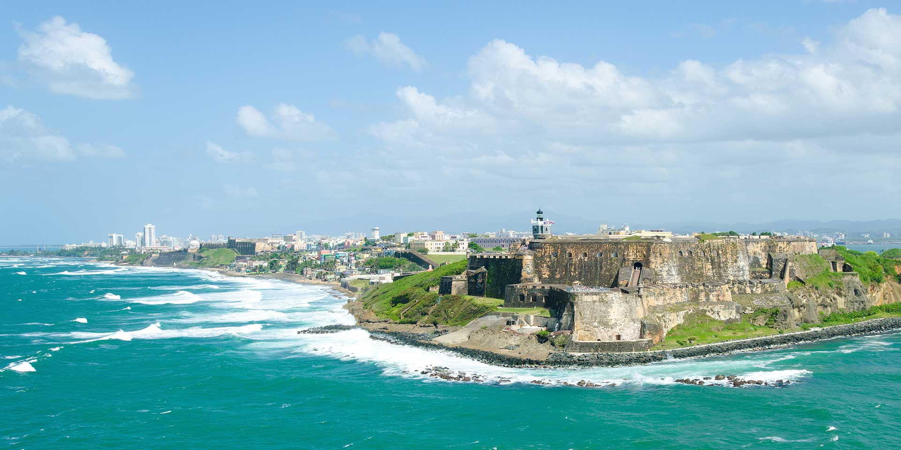

History of the Puerto Rican Islands
Taíno Indians who inhabited the territory, called the island Boriken or Borinquen which means: "the great land of the valiant and noble Lord" or "land of the great lords". On November 19, 1493 Christopher Columbus discovered the island in his second voyage to the New World. Originally the newcomers called the island San Juan Bautista, for St. John the Baptist and the town Puerto Rico because of its obvious excellent potentialities. It was not until later that the two names were switched. Thanks in part to the enthusiasm of ambitious Juan Ponce de León, quickly became Spain's most important military outpost in the Caribbean. On December 10, 1898, the Treaty of Paris is signed, treaty concluding the Spanish-American War. Spain renounced all claim to Cuba, ceded Guam and Puerto Rico and its dependent islets to United States, and transferred sovereignty over the Phillipines to the United States for $20,000,000. On March 2, 1917, United States granted Puerto Ricans U.S. statutory citizenship.
